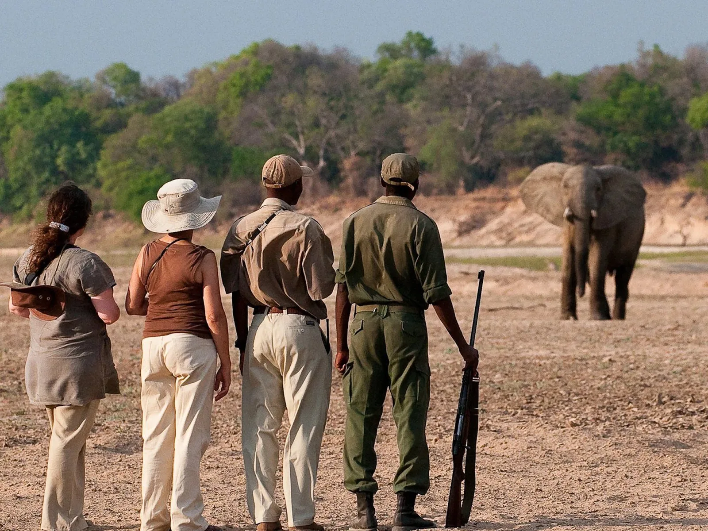
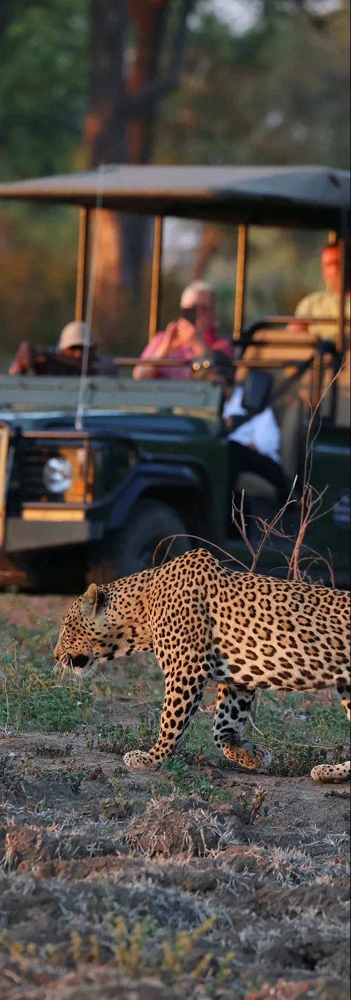
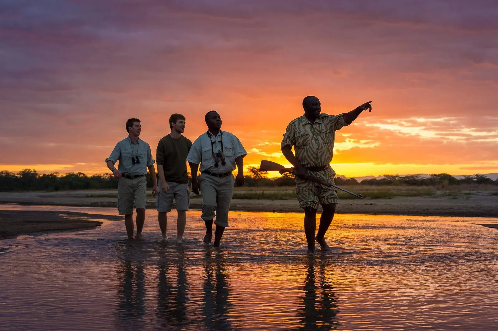
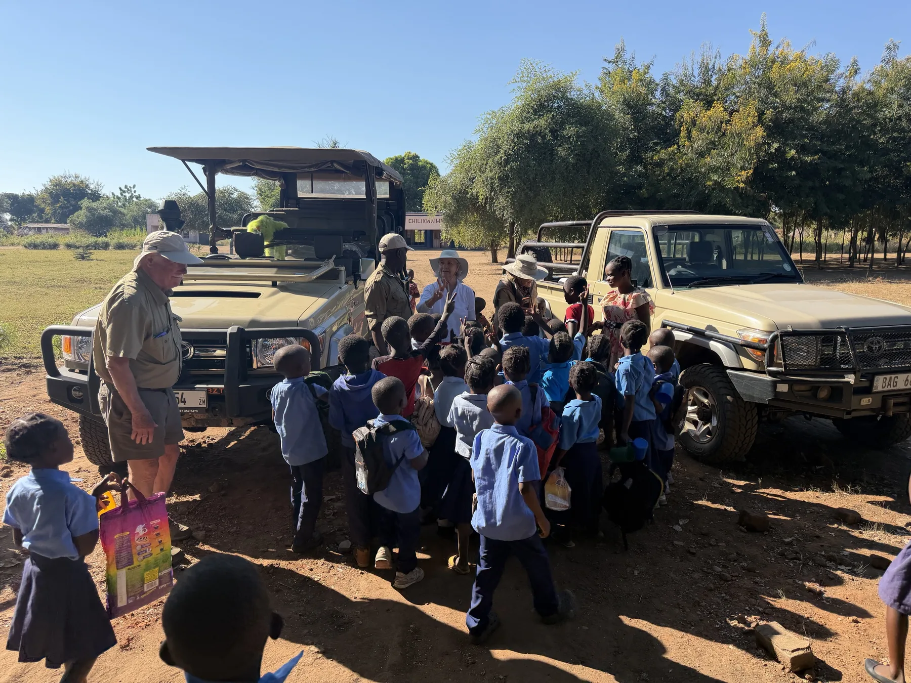
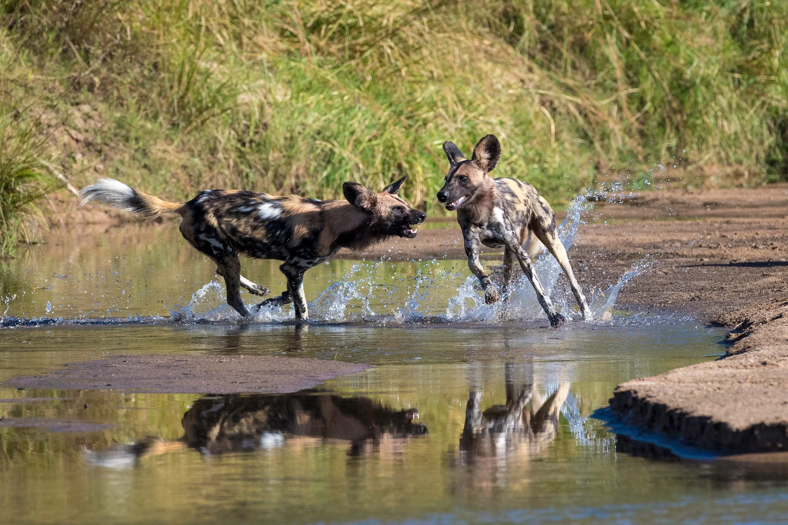
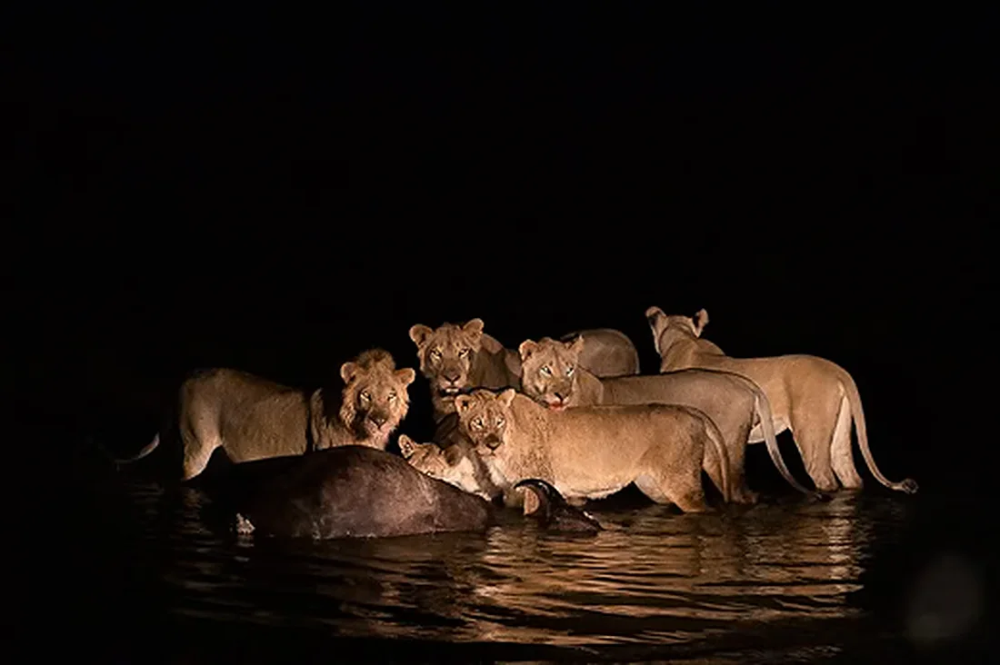
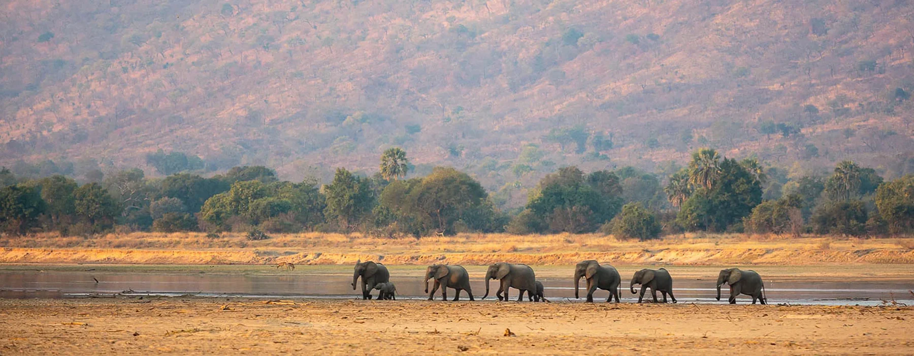

Not five animals. Five experiences.
The Big Five gives you a list. The Safari Five gets in your soul.
A true bushcamp. A walk. A conservation story you can see. Lion, leopard and wild dog. A night drive. Do all five, and you will understand why Africa gets into your soul.
The idea
The soul of safari.
The Big Five grew out of early hunting accounts. Over time it came to mean Africa's five great dangerous-game animals, and then photographic safaris adopted it as the way to sell a trip. It works: everyone knows it. But it is a list of sightings.
What it doesn't capture is what a safari has always been about: being in wild country, learning to read it, and living for a few days on Africa's terms. People who come home and start planning the next trip straight away are rarely chasing an animal they missed. They are chasing a feeling they found between the sightings.
The Safari Five names the experiences that give a safari that feeling: the ones that make it memorable, not just the sightings.

The five
Count them off.
 1
1A true bushcamp
The foundation that makes everything else possible.

2A walking safari
In a vehicle, you see Africa. On foot, you feel it.

3A conservation story you can see
Stronger communities. More wildlife.

4The Big Three carnivores
Lion, leopard and wild dog, in one place.

5A night drive
Africa after dark, with a sundowner first.
The film
The Safari Five, in two minutes.
Everyone knows the Big Five. This is the other five: a true bushcamp, a walking safari, conservation you can see, lion, leopard and painted dog, and a night drive.
Share it with whoever first took you on safari, or whoever you are taking next.
Learn the five
What each one is, where it comes from, and what to look for.
Plan for all five
Choose a place and camps where all five are part of daily life, and give yourself time.
Complete it
Tick them off in the app, stamp the area you are in, and get your Completed stamp and your name in the Hall of the Five.

Across wild Africa
Wherever it first got hold of you.
For some it was the plains of Kenya or the Serengeti. For others, a Zambian riverbed, the Okavango, Mana Pools or the Kruger. The Safari Five can be found wherever wild country, good guiding and a little time come together, and it is for anyone who has felt the pull to go back.
Questions
The Safari Five, explained.
What is the Safari Five?
The Safari Five are the five experiences at the heart of the classic African safari: a true bushcamp, a walking safari, a conservation story you can see, the Big Three carnivores (lion, leopard and wild dog) and a night drive. They are the experiences people picture when they dream of Africa, and the ones that call them back.
How is the Safari Five different from the Big Five?
The Big Five (lion, leopard, elephant, Cape buffalo and rhino) grew out of early hunting accounts and came to describe Africa's five great dangerous-game animals. Later, photographic safaris adopted it as their best-known marketing phrase. It is a list of sightings. The Safari Five is a list of experiences: the ones that make a safari memorable. They are not rivals, and the best safaris deliver both.
Where did the Safari Five come from?
It was created by The Safari Heritage Collection to celebrate the soul of safari: wild country, the guides who read it, and time to experience wild Africa. It is for anyone who loves safari, wherever they first fell for it.
Where can I do all five?
In a number of places across Africa, from Zambia, Zimbabwe and Botswana to South Africa, Tanzania and Kenya. Bushcamps, walks and big predators are widespread; night drives and all three great carnivores together narrow the field. See Where to find it.
How long does it take?
You can do all five in four or five nights, but seven or more across two or three camps gives you the best chance of seeing lion, leopard and wild dog.
What about the sundowner?
The sundowner is a given. A drink in the bush as the sun goes down is part of every true safari, so we do not count it as one of the five. On the Safari Five, it is the opening act of the night drive.
Does the app track me?
No. The app only looks at your location when you tap Stamp, and only on your phone, to see which Safari Five area you are in. It keeps the area name and throws the location away. Your location is never sent to us, never saved and never shared.
Do I have to walk?
Walking is always your choice. But it is one of the five, and almost everyone who tries it wishes they had walked more.